Studio · Flash de studio
Le flash de studio se règle à la main et se mesure au flashmètre. Voici les mises en place classiques, de la plus simple à la plus travaillée.
Rendus réalistes
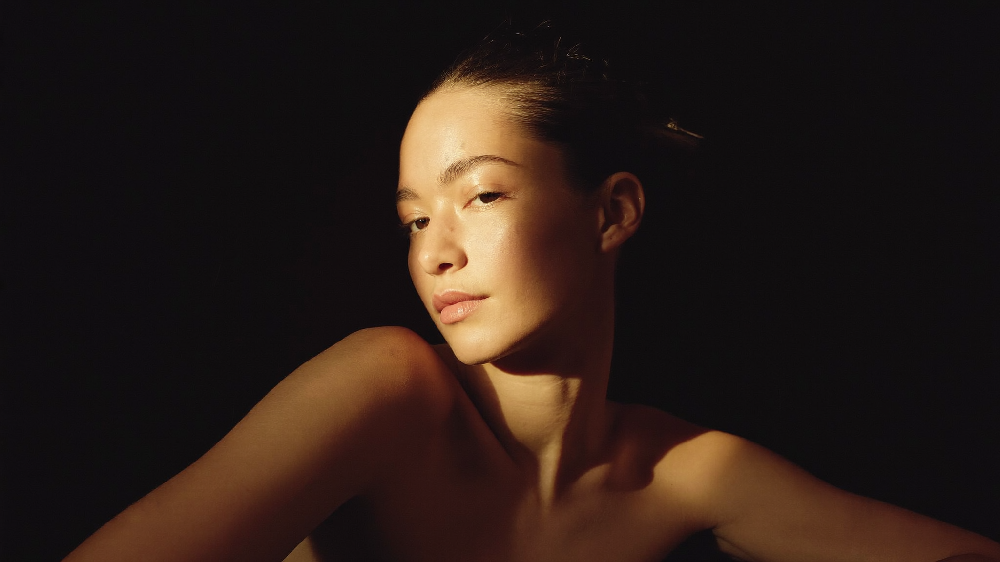
Rembrandt
La lumière vient de haut et de côté : le triangle de lumière sous le nez, le regard dramatique.
Softbox 60 cm · 45° haut · ratio 1:4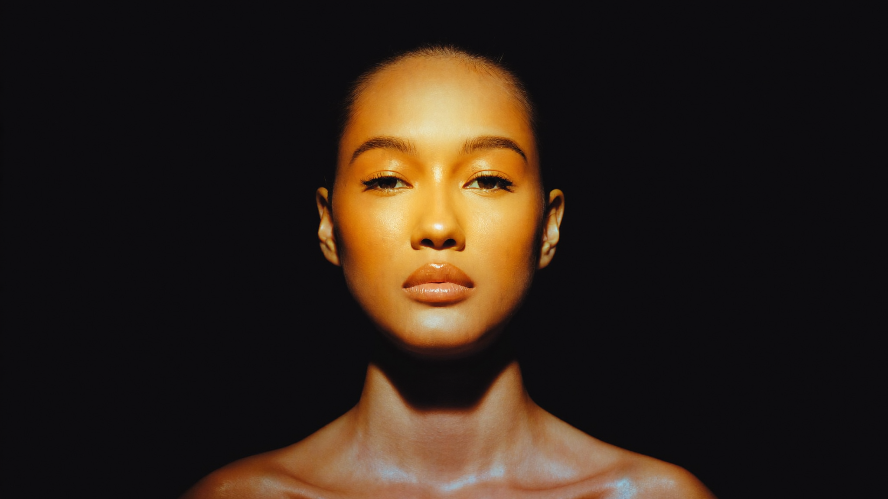
Butterfly
Le flash au-dessus dans l'axe : l'ombre du nez forme un papillon sous la bouche.
Softbox 60 cm · au-dessus · ratio 1:3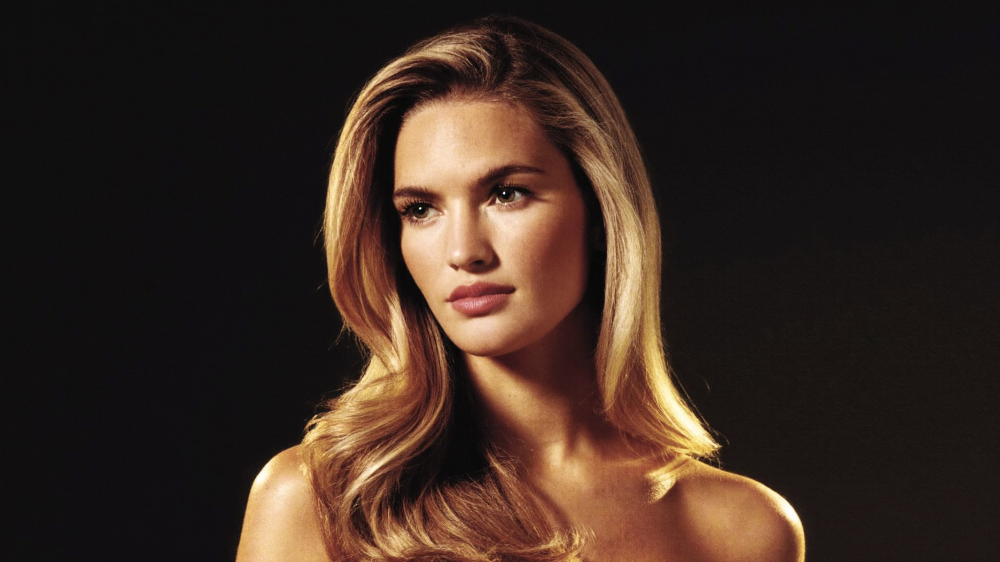
Éclairage 3 points
Key + fill + rim : le portrait studio classique, le contour se détache du fond.
3 sources · key 45° · rim 135°Studio · Flash cobra
Le flash cobra (speedlight) se déclenche à distance avec un transmetteur. Léger et mobile, il change tout en extérieur comme en petit studio.
Lumière continue
La lumière continue (LED, halogène) permet de voir le rendu en direct — idéale pour la vidéo et les débutants. Elle demande plus de puissance qu'un flash.
Extérieur
Dehors, on travaille avec le soleil — ou contre lui. La lumière dorée, le fill flash et le contre-jour changent complètement l'image.
Strobisme · Flash déporté
Le flash déporté sort du axe de l'objectif : on façonne la lumière comme au studio, en plein air ou dans une pièce sans fenêtres.
Lumière dure et douce
Ce qui rend une ombre dure ou douce, ce n'est pas la puissance du flash — c'est la taille apparente de la source par rapport au sujet, et sa distance. Une petite source loin = ombres dures. Une grande source proche = ombres fondantes.
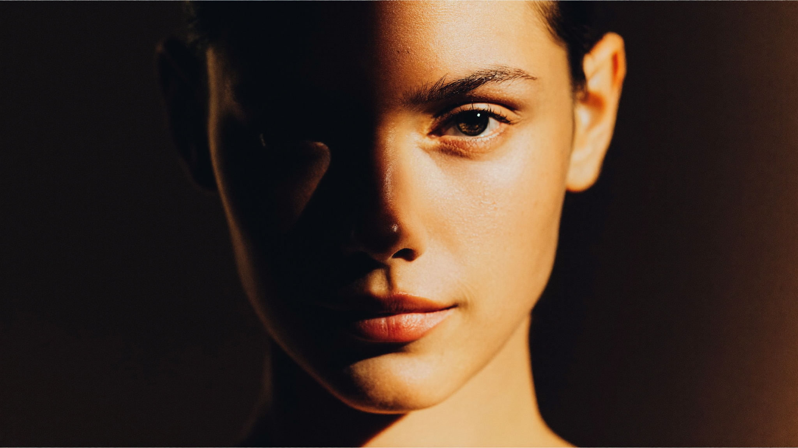
Lumière dure
Flash nu, petit softbox ou snoot : la source est petite, l'ombre tombe net. Regard perçant, texture marquée — parfait pour le caractère et le dramatique.
Flash nu · snoot · petite source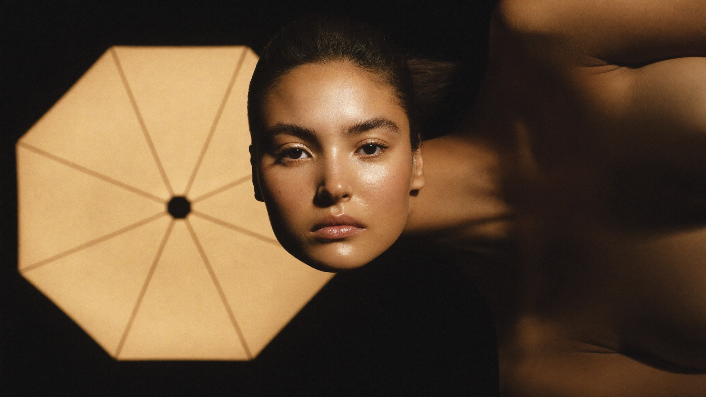
Lumière douce
Grande softbox ou lumière continue proche : la source « enveloppe » le sujet, les transitions sont fondantes. Rendu flatteur, peaux et formes adoucies.
Softbox ≥ 60 cm · proche du sujet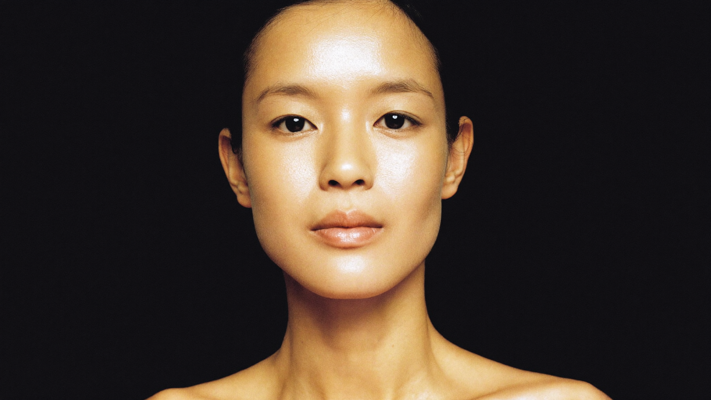
Entre les deux : le diffuseur
Un petit dôme ou une sphère devant le flash élargit la source sans la rendre molle : l'ombre reste marquée mais les bords s'adoucissent. Le compromis le plus utilisé.
Flash + diffuseur 20–30 cmPoses · Le corps parle
La lumière sublime, la pose raconte. Comme dans la vidéo studio de Benoit Lombard ci-dessus — quelques attitudes qui fonctionnent toujours, et comment les guider.

Le 3/4 debout
Épaules légèrement tournées, visage vers l'objectif. La pose la plus naturelle : elle allonge le cou et sculpte les joues.
À proposer en premier — 80 % des portraits
Assise, dos rond
Assise sur le bord, dos légèrement arrondi vers l'avant : le regard monte vers l'objectif. Détendue et graphique.
Fauteuil, banc, rebord — tout marche
Regard de côté
Le visage tourne à 45–90°, le regard reste vers l'objectif ou part au loin. La lumière key fait alors tout le travail de relief.
Idéal avec une lumière sculptée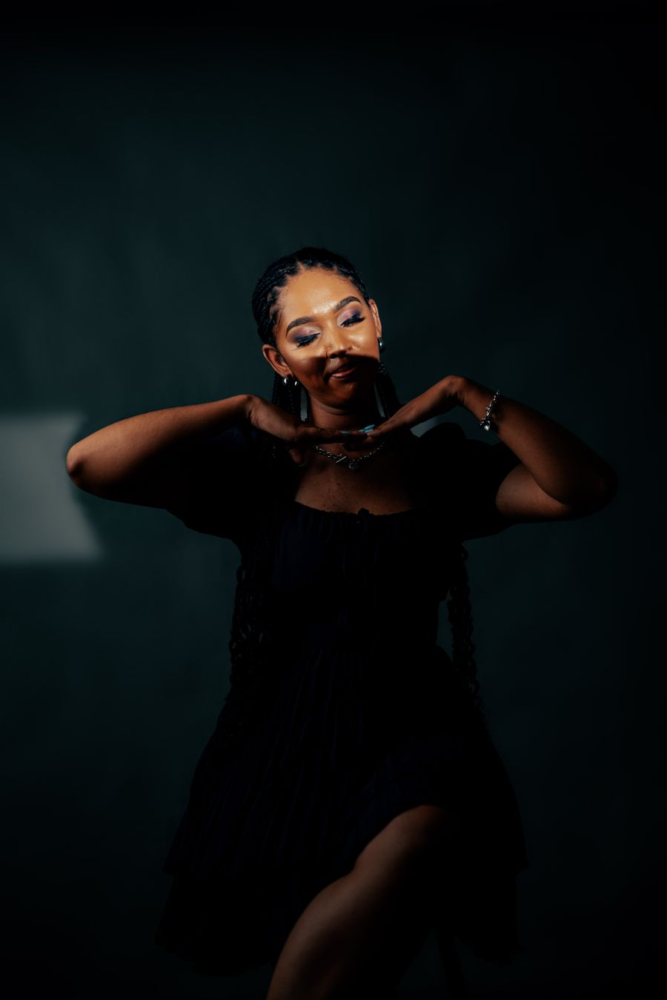
Tête penchée
Une inclinaison de 10–15° casse la raideur. Demande « penche la tête un peu » — jamais plus, sinon le regard se perd.
Détail qui change tout en plan serré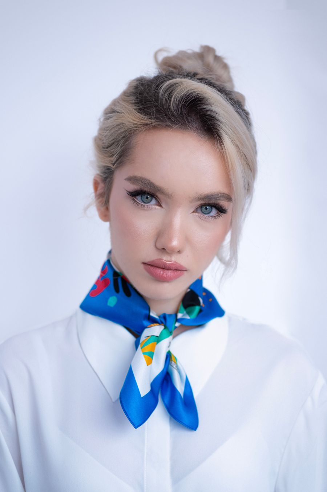
La main en geste
Menton posé sur la main, main dans les cheveux, bras croisés sans tension. Une main qui touche le visage détend tout le haut du corps.
Demander « touche-toi le visage »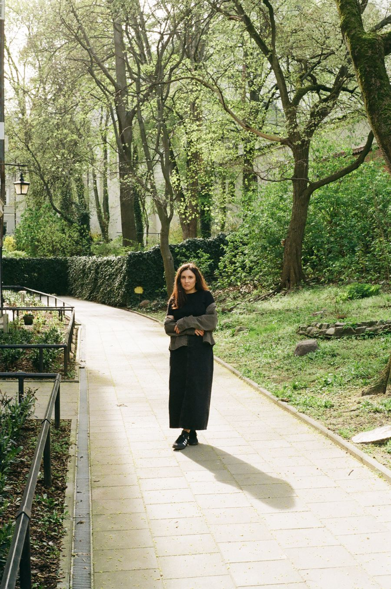
En mouvement
Marche, demi-tour, retour de regard : le mouvement tue la pose figée. Déclencher en rafale et choisir l'instant.
Rafale + synchro flash si besoinExemples réels
Le rendu obtenu sur le terrain — ces photos viennent de la galerie.
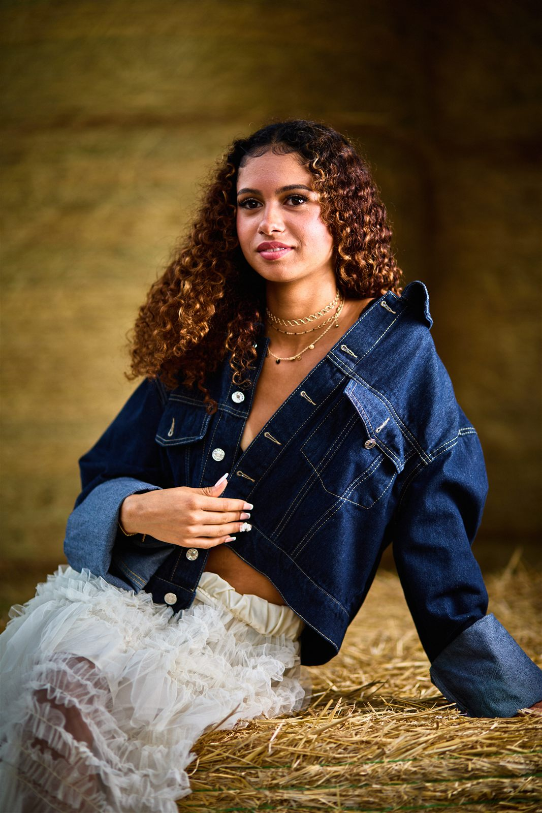
Portrait studio
Une softbox en clé, le fond à part.

Extérieur
Lumière naturelle ou flash déporté.

Lumière sculptée
Key, fill et rim dosés au flashmètre.
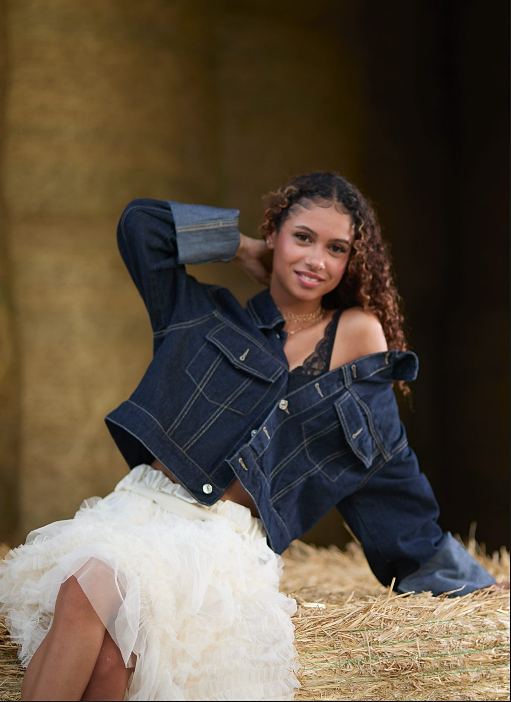
Portrait net
La lumière fait le relief, pas le flash.